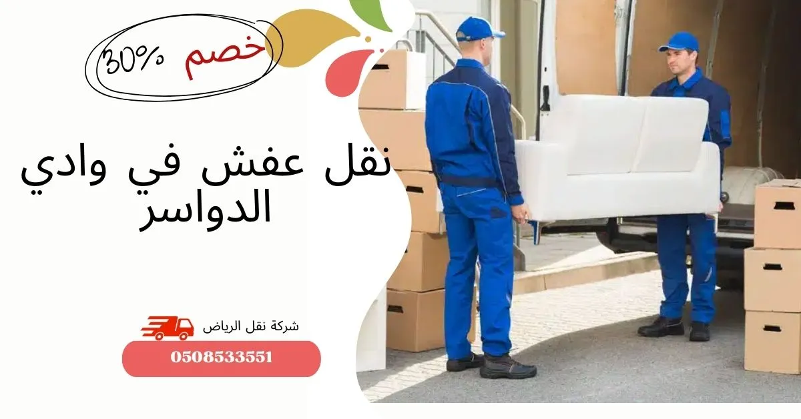

نقل عفش في وادي الدواسر

هل تبحث عن نقل عفش في وادي الدواسر، نحن هنا من خلالنا يمكنك الأعتماد على كافة الخدمات التي نقدمها مع العروض والخصومات بالإضافة إلى الضمان الذي نوفره لك عند القيام بعملية النقل، حيث تعد شركتنا هي الخيار الأمثل للأفراد والعائلات الذين يبحثون عن خدمات احترافية تضمن نقل الأثاث بأمان وسهولة، كما أن بفضل خبرتنا الكبيرة وفريق العمل الذي نقدمه المدرب على أعلى مستوى، تجد أن شركتنا توفر حلولاً مميزة لتوفير احتياجات النقل بين المدن، بالإضافة إلى الالتزام بالمواعيد والدقة في التنفيذ كما أننا نقوم باستخدام سيارات وشاحنات مجهزة بأحدث تقنيات الحماية لضمان سلامة الأثاث أثناء الرحلة، إذا كنت تبحث عن خدمة نقل أثاث موثوقة وفعالة، فإن اختيار شركة متخصصة في نقل العفش هو الخطوة الأولى لتجربة نقل خالية من المتاعب.
نقل عفش في وادي الدواسر
تتميز شركة نقل عفش في وادي الدواسر بتوفير كافة الخدمات التي تشمل فك وتركيب الأثاث، بالإضافة إلى تغليفه بمواد متينة، ونقله باستخدام شاحنات مخصصة مجهزة بأحدث وسائل الحماية، كما أن هذه الشركات تعتمد على فريق عمل مدرب ومحترف حيث يمتلك خبرة طويلة في التعامل مع مختلف أنواع الأثاث، بما في ذلك القطع الثقيلة والقابلة للكسر.
بالإضافة إلى أننا نوفر حلولًا مريحة للعملاء، حيث تضمن نقل الأثاث بسلاسة ودون تعقيدات، مع الالتزام بالمواعيد المحددة، كما نقوم بتقديم تأمينًا على الأثاث لتوفير راحة البال وضمان التعويض في حال حدوث أي ضرر.
لذلك يعد اختيار شركات موثوقة مثل شركة نقل عفش في وادي الدواسر، تضمن لك الحصول على خدمات احترافية بأسعار تنافسية، مع مراعاة الدقة والأمان في كل خطوة من عملية النقل. لذلك، تعد هذه الشركات الخيار الأمثل لنقل العفش بين المدن دون قلق أو تأخير.
شركات نقل العفش بين مدن المملكة
إذا كنت بحاجة إلى شركة نقل عفش بين مدن السعودية، فلا داعي للبحث الكثير لأننا هنا من خلال شركة نقل عفش في وادي الدواسر نقدم لك مجموعة شاملة من الخدمات التي تلبي جميع احتياجاتك، بكل سهولة وأمان بين مختلف المناطق، حيث تشمل هذه الخدمات فك وتركيب الأثاث، التغليف باستخدام مواد عالية الجودة، وتأمين النقل للحفاظ على سلامة القطع، بالإضافة إلى وجود مجموعة من الشاحنات المجهزة بالمعدات الحديثة التي تساعد في حماية الأثاث من التلف أثناء الرحلة، بالإضافة إلى ذلك فإننا نعتمد على فريق عمل مدرب للتعامل مع مختلف أنواع الأثاث، بما في ذلك القطع الثقيلة والقابلة للكسر، لتقديم خدمة احترافية ترضي العملاء.
بعضًا مدن المملكة التي تغطيها خدماتنا
- نقل عفش الرياض
- نقل عفش جدة
- نقل عفش مكة المكرمة
- المدينة المنورة
- الدمام
- الخبر
- الطائف
- أبها، الباحة
- نجران
- حائل
- القصيم
- تبوك
- عرعر
- الجوف
- جازان
- ينبع
- نقل عفش خميس مشيط
- القطيف
مميزات شركات نقل عفش بالرياض
بعد أن قمنا بتقديم جزء من خدماتنا المميزة، يبقى السؤال الذي يدور بعقلك وهو ما هي مميزات نقل عفش في وادي الدواسر، حيث ان شركتنا تتميز بتقديم أفضل الخدمات الاحترافية المتكاملة التي تلبي كافة احتياجات العملاء المختلفة، سواء كانوا بحاجة إلى النقل الداخلي أو بين الأحياء، فـ تعتمد الشركة على فرق عمل مدربة ومجهزة للتعامل مع جميع أنواع الأثاث، بما في ذلك القطع الثقيلة والحساسة، بالإضافة إلى أننا نستخدم مواد تغليف عالية الجودة لضمان حماية الأثاث من الخدوش أو التلف أثناء عملية النقل.
أهم مميزات شركات نقل العفش بالرياض
- الاحترافية والدقة: نقدم أفضل خدمات النقل المنظمة لنضمن لك الالتزام بالمواعيد.
- التجهيزات المتطورة: نحن نقوم باستخدام شاحنات مجهزة بوسائل حماية لتأمين الأثاث.
- الخدمات المتنوعة: تشمل خدماتنا فك وتركيب الأثاث، التغليف، وتنظيم عملية النقل.
- التكلفة المناسبة: توفر شركتنا خدمات بأسعار تنافسية تناسب جميع الميزانيات.
- الخبرة والموثوقية: لدينا خبرة كبيرة في التعامل مع كافة أنواع الأثاث، كما أن سمعتنا في السوق تجعلها قادرة على تلبية متطلبات العملاء بدقة وكفاءة.
بفضل هذه المميزات، تعتبر شركة نقل عفش في وادي الدواسر هي الخيار الأمثل لنقل الأثاث بسهولة وأمان.
افضل شركة نقل عفش خارج الرياض
تعتبر شركة نقل الرياض لخدمات نقل العفش واحدة من أفضل شركات نقل العفش خارج الرياض، والتي تقدم خدمات متكاملة تجمع بين الجودة والسرعة لضمان تجربة نقل مريحة وآمنة، فـ من أهم مميزات الشركة هو توفير فريق عمل متخصص يمتلك خبرة واسعة، في التعامل مع كافة أنواع الأثاث بالإضافة إلى فك وتركيب وتغليف الأثاث باستخدام مواد عالية الجودة تحميه من التلف أثناء النقل، كما نعتمد على شاحنات حديثة مجهزة بوسائل حماية لضمان وصول الأثاث إلى الوجهة المحددة دون أية مشاكل.
الجدول الزمني لشركة نقل الرياض
- الاستجابة السريعة: نقوم بالتواصل مع العملاء خلال ساعة واحدة فقط من تقديم الطلب.
- تحديد موعد النقل: يتم الاتفاق مع العميل على الموعد المناسب لمساعدتهم في إنجاز عملية النقل.
- التنفيذ الفوري: تبدأ عملية النقل في الوقت المحدد وتنفذ بدقة وفق جدول زمني يراعي مواعيد العملاء.
- التسليم: يتم تسليم الأثاث في الوجهة المطلوبة خلال يوم واحد إلى يومين حسب المسافة.
بفضل التزام شركتنا بالمواعيد وجودة الخدمات التي نقدمها وهذا بناءً على أراء عملائنا، تجد أن شركة نقل الرياض هي الخيار الأفضل لنقل العفش خارج الرياض.
يمكنك التواصل معنا لطلب خدمات نقل العفش بخصم 30% الآن
الأسئلة الشائعة حول نقل عفش في وادي الدواسر
ما هي ارخص شركة نقل اثاث بالرياض؟
تعتبر شركة نقل الرياض لنقل العفش واحدة من أرخص الشركات التي تقدم خدمة فك وتركيب ونقل الأثاث بأسعار مميزة، حيث تقدم خدماتها بأسعار تنافسية تناسب مختلف الفئات، ورغم الأسعار الاقتصادية التي نوفرها فإن الشركة تضمن لك جودة عالية في تنفيذ جميع مراحل النقل، حيث تبدأ العملية من فك وتركيب الأثاث وصولًا إلى تغليفه ونقله باستخدام شاحنات مجهزة بأحدث وسائل الحماية.
هل لديكم خدمة نقل عفش شمال الرياض؟
نعم نحن نقدم خدمة نقل عفش متميزة في منطقة شمال الرياض، كما أننا نغطي جميع الأحياء في هذه المنطقة ونضمن تقديم خدمات شاملة تلبي احتياجات العملاء، سواء كنت بحاجة إلى نقل أثاث منزلي أو مكتبي، فإن فريقنا المدرب يمتلك الخبرة اللازمة للتعامل مع جميع أنواع الأثاث، بما في ذلك القطع الثقيلة والقابلة للكسر.
بالإضافة إلى أننا نعتمد على شاحنات نقل حديثة ومجهزة بمعدات متطورة لتأمين الأثاث أثناء عملية النقل، مع تقديم خدمات إضافية مثل فك وتركيب الأثاث، تغليفه باستخدام مواد حماية عالية الجودة، وتنظيم النقل بما يضمن السرعة والدقة، كما نحرص دائمًا على الالتزام بالمواعيد وتوفير أسعار تنافسية تناسب الجميع.
في الختام تمثل نقل عفش في وادي الدواسر الحل الأمثل، وذلك لكل من يبحث عن خدمات موثوقة وآمنة لنقل أثاثهم، كما أن بفضل خبرتها وفريق العمل المتخصص توفر الشركة عملية نقل مريحة وسريعة دون القلق بشأن تلف الأثاث أو ضياع الوقت، بالإضافة إلى استخدام الشاحنات المجهزة والخدمات الإضافية مثل التأمين وفك وتركيب الأثاث يجعلها الخيار الأمثل للعملاء، سواء كنت تخطط لنقل أثاث منزلك أو مكتبك بين مدن الرياض، فإن الاعتماد على شركة محترفة يضمن لك تجربة سلسة وخالية من المتاعب، مع الحفاظ على جودة وسلامة ممتلكاتك.